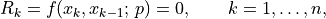

pyzag.nonlinear
Solving recursive nonlinear equations and computing parameter sensitivities via the adjoint method.
The solver integrates a recursive system whose residual couples consecutive steps (lookback 1):

solving the trajectory in chunks with a blocked Newton iteration. Parameter
gradients are obtained by a reverse adjoint sweep that reuses the same chunk
Jacobians, giving memory cost independent of n rather than backpropagating
through every step.
- class pyzag.nonlinear.NonlinearFunctionOperator
Bases:
ABCAbstract operator passed to the Newton solver.
The solver integrates a recursive nonlinear system whose per-step residual has lookback
L:R_k = f(x_k, x_{k-1}, dots, x_{k-L};, u_k;, p) = 0, qquad x_k in mathbb{R}^n
A chunk covers
mconsecutive steps. The forcesu_kand the lookback tailx_0(the previous solution) are captured at construction; Newton only varies the chunk unknownsx = (x_1, ..., x_m). Calling the operator maps that trial state to(R, J):R(x) = (R_1, ..., R_m)(aBlockVector), withR_k = f(x_k, x_{k-1}; u_k).J = dR/dx. ForL == 1this is block lower-bidiagonal, with diagonal blocksA_k = dR_k/dx_kand subdiagonal blocksB_k = dR_k/dx_{k-1}, so that(J @ d)_k = A_k d_k + B_{k-1} d_{k-1}and all other blocks are zero.
Newton iterates
x <- x - J^{-1} R(x), solvingJ d = Reach iteration via the bidiagonal (Thomas/PCR) solver.Forces and time are captured at construction. Newton only passes the state
xas aBlockVectorand receives back(R, J)whereRis aBlockVectorandJis achunktime.BidiagonalForwardOperator.
- class pyzag.nonlinear.NonlinearFunctionOperatorFactory
Bases:
ABCFactory for chunk-level
NonlinearFunctionOperatorobjects.The forward solve calls
make_operator()once per chunk to create a stateful operator that captures the chunk’s previous-solution lookback and forces. The adjoint pass callsevaluate_raw()to recompute the residual and Jacobian; the latter as a backend-typedBlockJacobianconsumed by the adjoint walk.Subclasses must expose
lookbackandwrapper(typically as properties) and implementmake_operator()andevaluate_raw(). The canonicalChunkOpbelow is a drop-in implementation that most subclasses can return frommake_operatorwithout modification.- abstract property lookback: int
Number of previous solution steps the residual depends on.
Declared abstract so a subclass that forgets it fails at instantiation rather than with a late
AttributeErrordeep in the solver.
- abstract property wrapper
Backend bridge (an
ODEWrapper-like object) that wraps/unwraps raw tensors as backendBlockVectorobjects.
- abstractmethod make_operator(prev_solution: Tensor, forces: Sequence[Tensor], inverse_operator) NonlinearFunctionOperator
Build a
NonlinearFunctionOperatorfor a single chunk.
- abstractmethod evaluate_raw(x_full: Tensor, forces: Sequence[Tensor]) tuple[Tensor, BlockJacobian]
Return
(R, J)for adjoint reconstruction.x_fullincludes the lookback steps prepended to the chunk state.Ris a raw torch tensor;Jis a backend-typedBlockJacobian.
- class pyzag.nonlinear.ChunkOp(factory: NonlinearFunctionOperatorFactory, prev_solution: Tensor, forces: Sequence[Tensor], inverse_operator)
Bases:
NonlinearFunctionOperatorGeneric per-chunk operator for any
NonlinearFunctionOperatorFactory.Holds the chunk’s previous-solution lookback and forces; on each Newton call, assembles the full state, asks the factory for raw
(R, J), then wraps R via the factory’sODEWrapperand builds the chunk’s forward bidiagonal system from theBlockJacobian. Most factories can returnChunkOp(self, ...)from theirmake_operatorwithout modification.
- class pyzag.nonlinear.FullTrajectoryPredictor(history: Tensor)
Bases:
objectPredict steps using a complete user-provided trajectory.
- predict(results: Tensor, k: int, kinc: int) Tensor
- class pyzag.nonlinear.ZeroPredictor
Bases:
objectPredict steps just using zeros.
- predict(results: Tensor, k: int, kinc: int) Tensor
- class pyzag.nonlinear.PreviousStepsPredictor
Bases:
objectPredict by providing the values from the previous chunk of steps.
- predict(results: Tensor, k: int, kinc: int) Tensor
- class pyzag.nonlinear.LastStepPredictor
Bases:
objectPredict by providing the values from the previous single step.
- predict(results: Tensor, k: int, kinc: int) Tensor
- class pyzag.nonlinear.StepExtrapolatingPredictor
Bases:
objectPredict by extrapolating using the previous chunks of steps.
- predict(results: Tensor, k: int, kinc: int) Tensor
- class pyzag.nonlinear.ExtrapolatingPredictor
Bases:
objectPredict by extrapolating the values from the previous single steps.
- predict(results: Tensor, k: int, kinc: int) Tensor
- class pyzag.nonlinear.StepGenerator(block_size: int = 1, first_block_size: int = 0)
Bases:
objectGenerate chunks of recursive steps to produce at once.
- reverse() StepGenerator
Reverse the iterator to yield chunks starting from the end.
- class pyzag.nonlinear.InitialOffsetStepGenerator(*args, initial_steps: Sequence[int] | None = None, **kwargs)
Bases:
StepGeneratorGenerate chunks of recursive steps with optional user-provided initial chunks.
- class pyzag.nonlinear.RecursiveNonlinearEquationSolver(func: ~pyzag.nonlinear.NonlinearFunctionOperatorFactory, step_generator: ~pyzag.nonlinear.StepGenerator = <pyzag.nonlinear.StepGenerator object>, predictor=<pyzag.nonlinear.ZeroPredictor object>, direct_solve_operator=<class 'pyzag.chunktime.BidiagonalThomasFactorization'>, nonlinear_solver: ~pyzag.chunktime.ChunkNewtonRaphson = <pyzag.chunktime.ChunkNewtonRaphson object>, callbacks: ~typing.Sequence[~typing.Callable[[~torch.Tensor], ~torch.Tensor]] | None = None, convert_nan_gradients: bool = True)
Bases:
ModuleGenerates a time series from a recursive nonlinear equation and (optionally) uses the adjoint method to provide derivatives.
funcis aNonlinearFunctionOperatorFactory. The factory knows how to create chunk-level operators (for the forward solve) and how to recompute residuals / Jacobians (for the adjoint). Built-in factories includepyzag.ode.BackwardEulerODEandpyzag.ode.ForwardEulerODE; users can also subclassNonlinearFunctionOperatorFactorydirectly and returnChunkOpfrom theirmake_operator.- forward(*args, **kwargs)
Alias for solve.
- solve(y0: Tensor, n: int, *args: Tensor, adjoint_params: Sequence[Tensor] | None = None) Tensor
Solve the recursive equations for n steps.
- block_update(prev_solution: Tensor, solution: Tensor, forces: Sequence[Tensor]) Tensor
Solve one chunk via Newton.
Builds a chunk-level operator from the factory, wraps the initial guess as a
BlockVector, runs Newton, and unwraps back to a raw tensor for the result array.
- rewind(output_grad: Tensor) tuple[tuple[Tensor, ...], Tensor]
Rewind through an adjoint pass to provide the dot product for each quantity in output_grad.
- accumulate(grad_result: tuple[Tensor, ...], adjoint: BlockVector, R: Tensor, retain: bool = False) tuple[Tensor, ...]
Accumulate the updated gradient values.
- block_update_adjoint(J: BlockJacobian, grads: BlockVector, a_prev: BlockVector) BlockVector
Do the blocked adjoint solve.
Jis the chunk’sBlockJacobianin adjoint-walk order (i.e. the result ofBlockJacobian.as_adjoint_walk()). The single-block inter-chunk coupling is delegated toBlockJacobian.couple_prev_chunk()so the solver never touches raw tensor indexing.
- pyzag.nonlinear.solve(solver, y0, n, *forces)
Solve a
RecursiveNonlinearEquationSolverwithout the adjoint method.
- pyzag.nonlinear.solve_adjoint(solver, y0, n, *forces)
Apply a
RecursiveNonlinearEquationSolverto solve adjoint-differentiably.